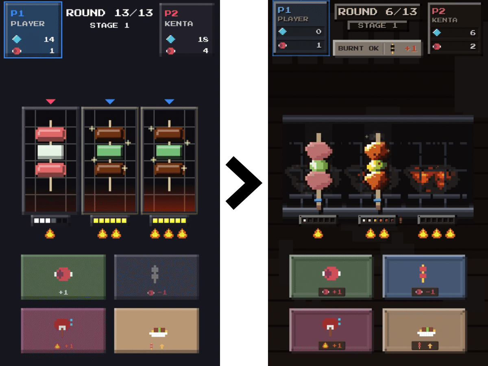
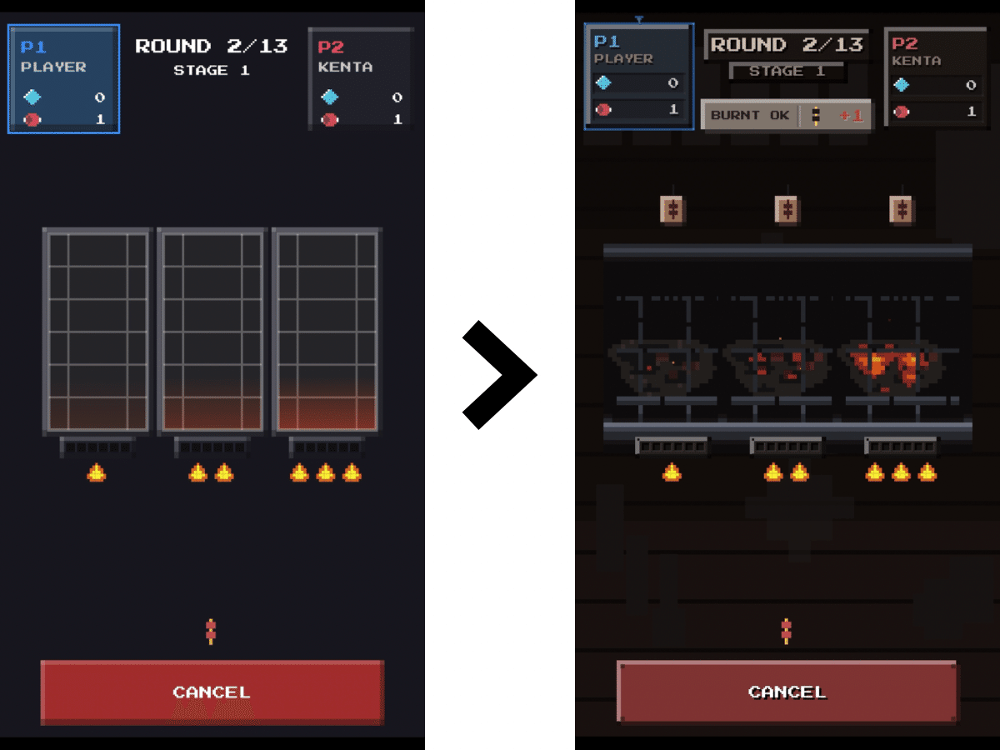
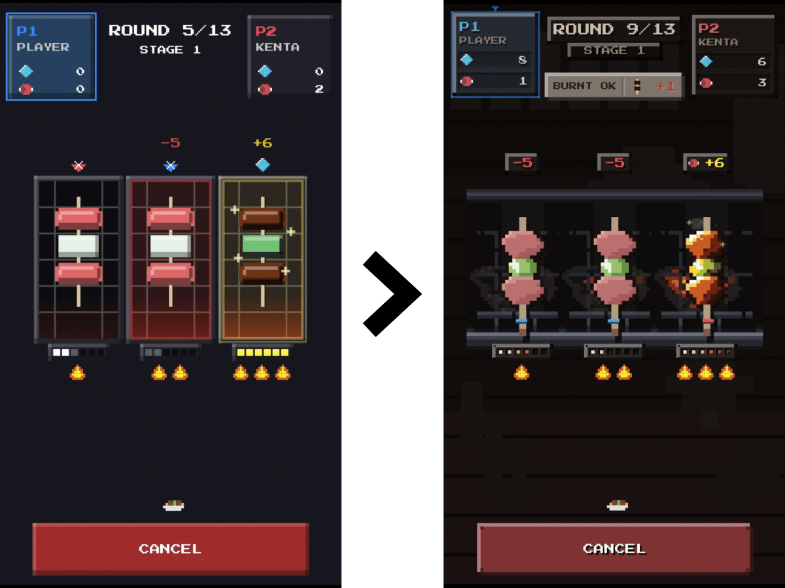
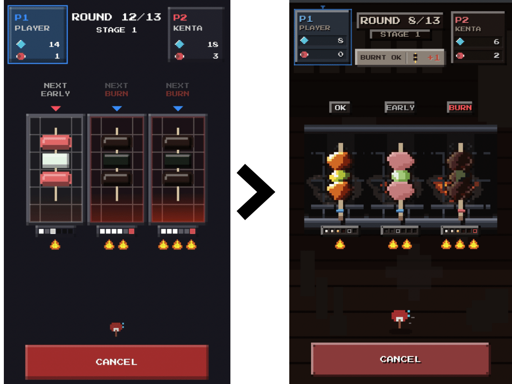
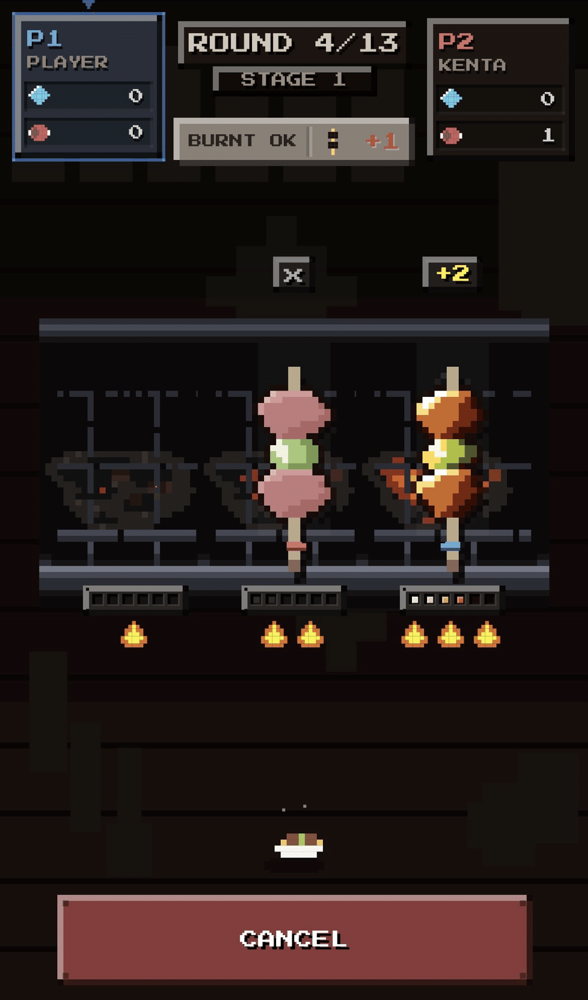
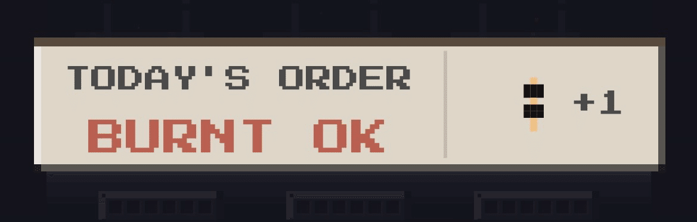
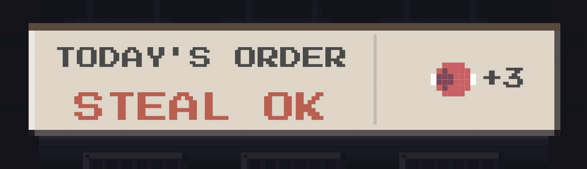

ゲームの中の焼き鳥を、焼き直した
以前作成したゲーム、
「Yakitori Wars」をアップデートしました。
前回の記事を書いたあと、
嬉しいことにフォロワーさんに遊んでもらい、
コメントまでいただくことができました。
「焼き鳥美味しそうでシンプルなゲーム性でとっつきやすくて楽しい・・・！」
「初心者にとってかなり親切な設計だと思います。 とても楽しく遊ばせていただきました。」
人から感想をもらえるのはありがたい。しみじみと感じた。
そして、私が密かに目指していた、
「説明書がなくても遊べるゲーム」にも少しだけ近づけている気がした。
おいしさアップデート
今回のアップデートは、
ルールを大きく変えたり、派手な新機能を足すというより、
画面の中の焼き鳥を、もう少し美味しそうに焼き直すためのもの。
旧バージョンでも、ゲームとしては成立していた。
ただ、今見るとまだ少しだけ記号的だったので、今回はそこを作り直した。
焼き鳥と炭火をドット絵で描き直し、
生、焼けた状態、焦げた状態をしっかり分ける。
状況が変わる瞬間には、音も入れた。
ただ色が変わるのではなく、
肉が焼け、脂が照り、焦げていく。

焼け具合でコントラストも変えている
ルールが変わったように見えた
更に、今回のアップデート後、
フォロワーさんからのコメントで、嬉しい発見があった。
以前は陣取りゲームのように感じていたこと。
今回は相手の焼けた串を奪ったり、焦がしたり出来ることに気づき、
ルールもアップデートされたように感じたこと。
実は、これらは以前から変えていないルールだった。
遊びながら発見してもらえればいいと思っていたが、
今回のアップデートにあわせ、少しだけ画面を分かりやすくした。
・焼き場はプレイヤーごとに分かれておらず、お互い共有していること。
・場所を所有するのではなく、それぞれが串を置いているだけということ。
・串が今どのような状態にあり、行動すると次にどう変わるのか。
これらが一目で分かるように意識した。
実は、この見えづらかった部分こそが、
面白さに繋がるものだったのかもしれない。

木札で串を置ける場所を示した

肉を差し出す代わりに相手の焼けた串も奪える
相手の串を奪うには手持ちの肉が必要なので、
肉は材料であると同時に、駆け引きに使う資源でもある。
理不尽に奪うだけではなく、相手の手持ちの肉が増えるリスクもある。
手持ちの肉は最後まで残せば得点にもなる。

焼きを早めたり焦がしたりできる
「強火」でも取れる焼き加減に
焼き加減も少し調整した。
強火で完璧な焼き加減を狙うのは難しい。
その代わり、完璧に焼ける前の
「まあ、食べられる」タイミングで見切って取れるようにした。
完璧になるまで待つのか。
相手に取られる前に早めに取るのか。
強火の串にも小さな判断が生まれた。

「今日の注文」で、焼き方に意味が出た
さらに、客からの注文が来るようにした。
「強火が好き！」
「焦げててもいいよ。」
「相手の串を取っちゃえ。」
これらに応えると得点が上がるため、
毎回同じ焼き方をするゲームではなくなった。
ただ画面に合わせて焼けた串を取るのではなく、
今日の客が何を求めているのかを見る。

※通常はペナルティ

これらのアップデートひとつひとつの変更は小さいが、
重なっていくとゲームの手触りが少し変わる。
敵AIの仕組みも作り直していないが、
もともと盤面の状況を見て行動を選ぶ仕組みだったため、
注文や焼き加減の変更とも自然にかみ合った。
以前は適当に遊んでも勝てることがあったが、
今回はそれが少なくなった気がした。
パッと見では、ただ焼き鳥を焼くだけに見えるかもしれない。
でも実は、相手の焼き加減を見たり、焼けた串を奪ったり、
うちわで相手の邪魔をしたりする、ちょっとした駆け引きゲームでもある。
今回のアップデートで、もともとあったものが少し姿を見せた。
Yakitori Wars がほんの少しだけ、
「ゲーム」から「焼き鳥屋」に近づいたような気がしている。